Initiatives tab: measured before, redesigned after
agent-worktree-gui 1.144.0 on wtgui/read-row-180-in-c-users-roper-wag-state-f308b5, 2026-11-21. All numbers below are read from a headless Chromium against a private panel, not from the stylesheet.
1px auto at 1:1, and a pressed button painted exactly the hover state. Worst of all, the pane rebuilds itself every four seconds and dropped keyboard focus on the floor: the ring was gone 4.6 seconds after a Tab. The four passes were chip fit, left edge, hover and Enter on a fold.
h5, a sentence and a primary action. The focus ring is 2px at 8.3:1, a pressed button moves 1px and darkens, and focus now survives the pane's own repaint.
How this was measured
The live panel on 0.0.0.0:7331 was never used. A sandbox panel was booted from server.js on a free port with WAG_HOME pointed at a scratch directory, so the reader's ~/.wag state was never read or written. The fixture holds four initiatives over three projects and seven worktrees: two initiatives with two trees each, one with four trees over three projects including a worktree whose path is missing, and one with no trees at all. The descriptions range from one line to six paragraphs, and the chips are mixed. The rendered page is the real route, scan and queue read, not injected DOM.
The live listener was recorded before and after every run. It was the same process throughout: TCP 0.0.0.0:7331 LISTENING 39596, GET /api/health 200, before and after. The redesign did not restart, reload or write the reader's panel.
The measurements, side by side
| Check | Before | After | Result |
|---|---|---|---|
| Card title | 12px / 600, 17.4px line | 13.5px / 600, 18.2px line | pass |
| Description | 11.5px / 16.7px | 12px / 18.6px | pass |
| Project, tree and assistant rows | 11.5px | 12px | pass |
| Hints and chips | 10.5px hint, 10px chip | 11px hint, 10.5px chip | pass |
| Worst text contrast | 3.6:1 at .init-chips .as-hint | 6.7:1 at .init-desc | AA |
| Spacing values | 9, 10, 7, 5, 6, 2px | 4, 8, 12, 16, 24px | 4px grid |
| Control height | smallest 15px; 7 under 28px | smallest 28px; 9 measured | pass |
| Chips | 21, widest 147.8px, none clipped | 21, widest 168.1px, none clipped | pass |
| Description line length, docked | 71 ch at 441px | 68 ch at 437px | under 80 |
| Description line length, floating | 217 ch at 1344px | 72 ch at 466px | pass |
| Empty tab | no heading, 215 chars, no primary | h5, 213 chars, primary | pass |
| Focus ring | 1px auto, 1:1 | 2px solid, 8.3:1 | pass |
| Pressed vs hover | identical | 1px down, background 35,42,53 | pass |
| Focus after the 4 second repaint | lost | kept, 2px ring | pass |
| Rubric | 4/16 = 25% | 16/16 = 100% | green |
The card is 463px wide in the dock in both runs, so the width itself was not the fix. Padding went from 9/10px to 12px, the radius from 7 to 8, the gap between cards from 9 to 12, and the height of an open card grew because the rows are now readable controls rather than 17px text lines.
The same states, before and after
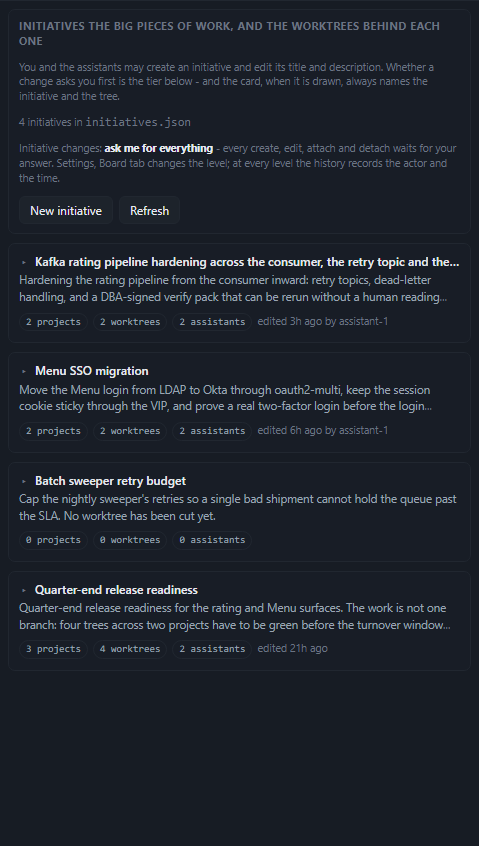
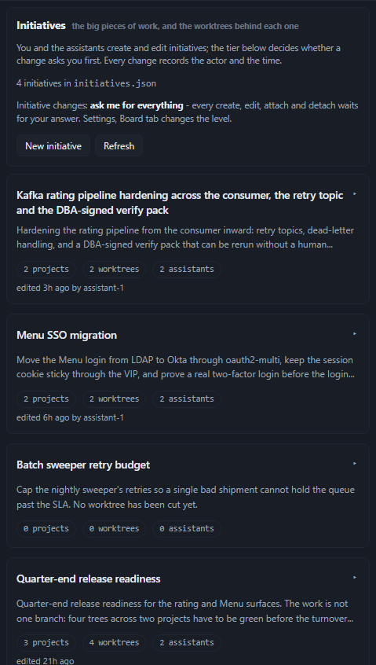
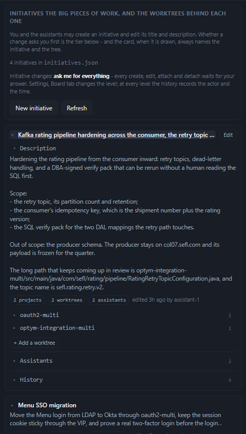
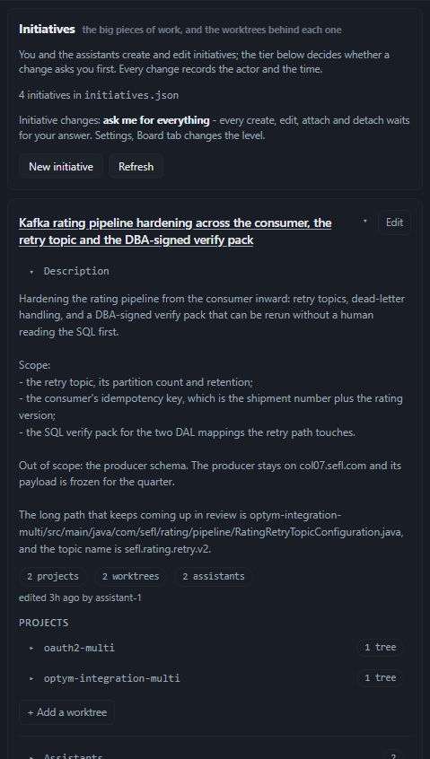
1 tree, and every row is 32px.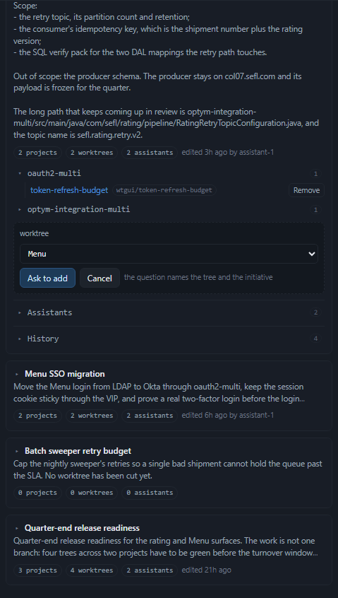
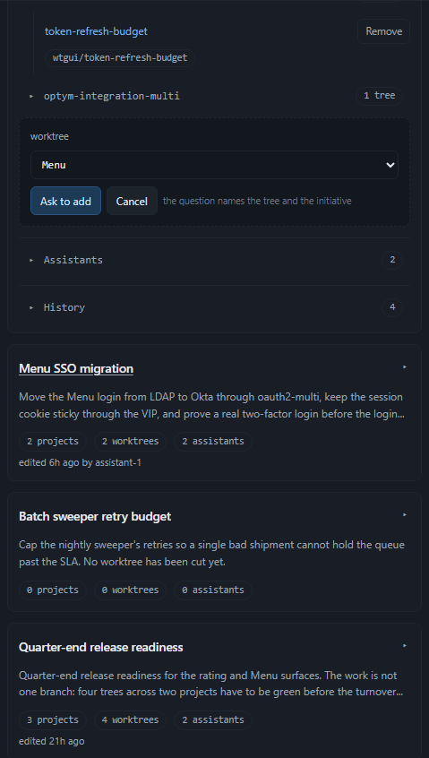
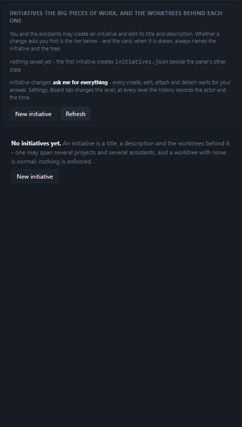
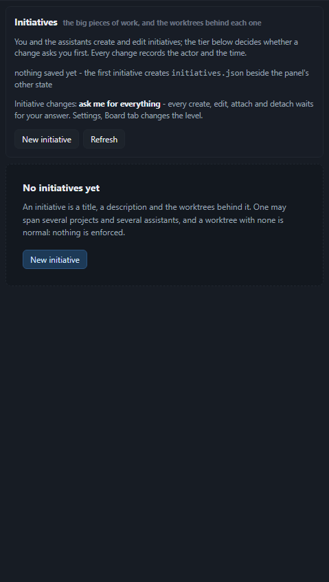
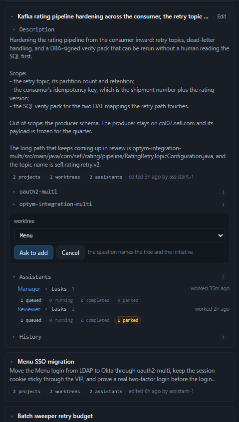
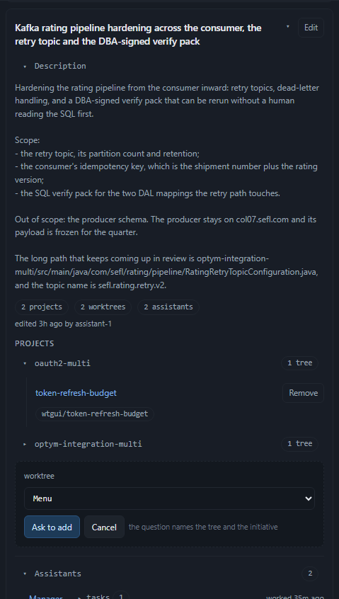
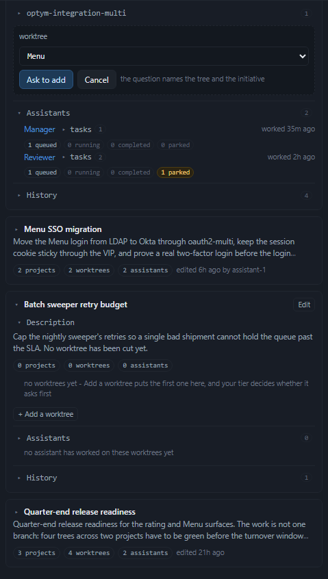
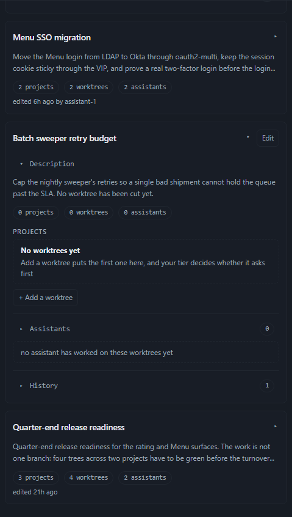
No worktrees yet, one sentence naming the next action, and the Add a worktree control directly below it.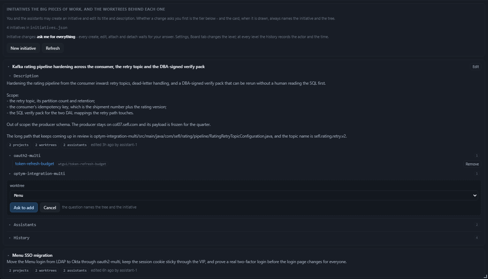
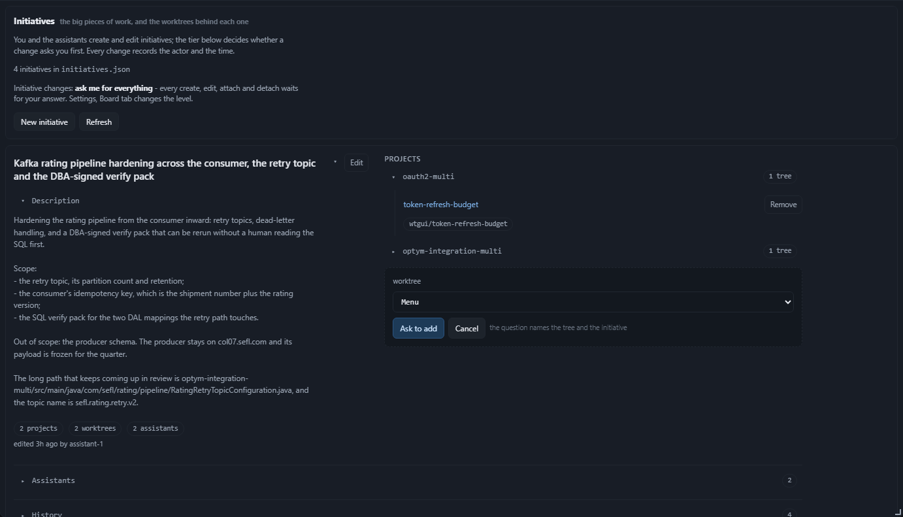
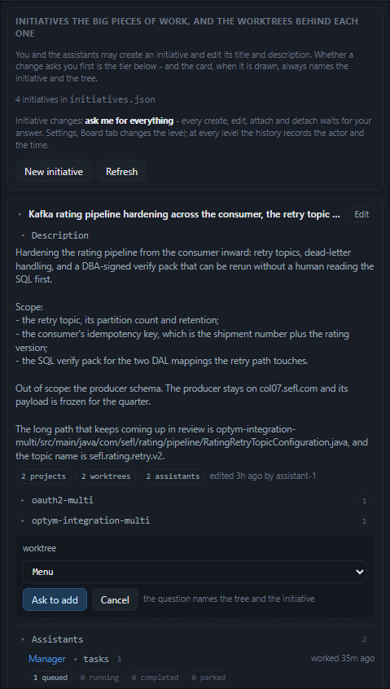
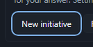
#7fb2e8 ring at 8.3:1. The focus is restored after the repaint and the ring stays.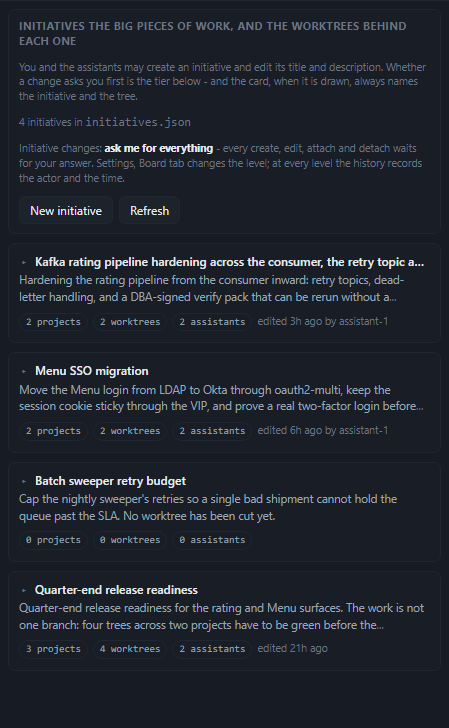
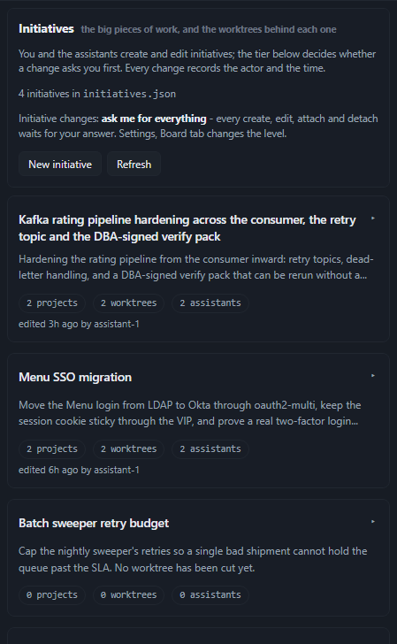
What changed in the panel's own language
The redesign did not invent a third style. It keeps the panel's .as-group card, its .chip pill and its palette (#0f1115, #161a21, #151a22, #262c37, #e6e9ef, #9aa4b2), and adds a scale where the old block had none.
- A 4px spacing scale for padding, gaps and margins, with 12px card padding and a 12px stack gap. The old 9, 10, 7, 5, 6 and 2px values are gone.
public/style.css:4719 - A four step type scale: 13.5px title (15px in the wide float), 12px body and rows, 11px hints, 10.5px chips. Nothing is below 10.5px, and the hint that scored 3.6:1 is now 6.7:1.
public/style.css:4725 - A real empty state, twice: the tab gets an
h5, one sentence and a primary action (public/assistant.js:4007); an initiative with no worktrees getsNo worktrees yetand the next action (public/assistant.js:3815). - Cards that scan: the caret moved to the right so the title and body share one left edge, the project count says
1 treeor2 treesinstead of a bare number, and the title keeps its one-line clamp only while folded. - A two column card only when there is room:
#as-initiativesis an inline-size container, and the card becomes a 72ch prose column plus a 640px project column above 1000px. The 480px dock never sees it.public/style.css:4722,public/style.css:4815 - States that exist: hover on project folds, Remove and tree links;
:activeon the title button moves 1px and darkens; the focus ring is 2px at 8.3:1.public/style.css:4842 - Focus survives the repaint: the pane remembers the focused control by its own
data-init-*value before rebuilding, finds it again by value, and restores it without scrolling. A keyboard focus also gets the ring back for as long as it keeps focus.public/assistant.js:3934,public/assistant.js:4035
The gate
tools/verify-initiatives-redesign.mjs is the deterministic before and after gate. It builds the same fixture under a scratch WAG_HOME, boots the panel on a free port, measures the docked card, the empty tab, the 900px window and the wide float, and compares the result with the recorded 1.142.2 baseline in tools/initiatives-redesign-baseline.json. It does not touch 7331. Exit 0 is green, 1 is a regression or a failed check, and 2 means Playwright never ran.
node tools/verify-initiatives-redesign.mjs score (docked): 16/16 = 100% before 4/16 = 25% PASS the card title is at least 13px and heavier than the body [FAIL -> PASS]: 13.5px, weight 600 PASS the description is at least 12px with 1.5 line-height [FAIL -> PASS]: 12px / 18.6px PASS every text run is at least 4.5:1 against its own background [FAIL -> PASS]: worst 6.7:1 PASS the card's text shares one left edge [PASS -> PASS]: spread 16px PASS a keyboard-reached control paints a 2px ring at 3:1 [FAIL -> PASS]: 2px solid, 8.3:1 PASS keyboard focus survives the tab's own repaint [FAIL -> PASS]: 4.6s after Tab, ring 2px PASS the reader's 7331 listener is the same process after the sandbox: pid 39596 -> 39596, health 200 -> 200
The wide float is scored 15 of 16. The one miss is the single-left-edge check: the layout deliberately puts the project column at x=597.4, so a one-column edge rule cannot pass there. The gate allows exactly that one check in the wide score and requires every other check, including the 72 character line length, the assistant row and the empty state. That exception is named in the gate, not hidden in a threshold.
What is not claimed
- The screenshots are the seeded sandbox, not the reader's live data. The live panel was left alone; no live state was read or written.
- The fixture is four initiatives, three projects, seven worktrees, one empty initiative and one missing path. It is representative, not exhaustive.
- The two column float is a design decision, not a measurement win: it buys 72 character prose at 1384px and costs the one-column left edge. The one column remains the dock's layout.
- Focus restoration is best effort if the focused control itself disappears between reads (for example, a project fold that closes). In that case the control no longer exists and the focus is not invented.
Evidence: docs/reports/initiatives-redesign/before/ (12 PNGs) and docs/reports/initiatives-redesign/after/ (13 PNGs), both produced by tools/capture-initiatives-redesign.mjs. The before and after numbers are recorded in tools/initiatives-redesign-baseline.json and docs/reports/initiatives-redesign/gate.json. The raw per-element ledgers were scratch files and are not committed.